Proposal · Framed edition
The Chairman
and Frank Gehry
Ten moments set in brushed stainless steel, and one portrait at full scale.
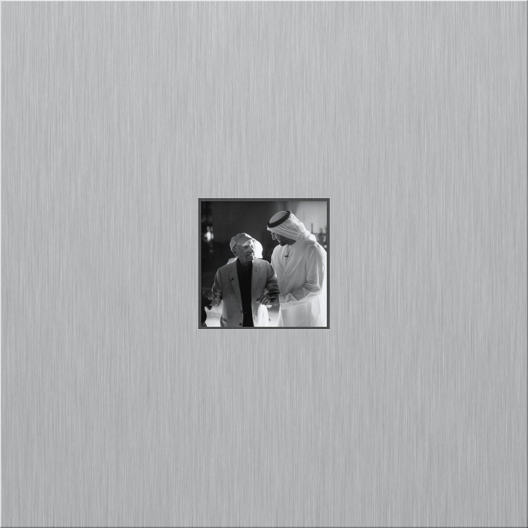
In hand
Brushed steel, a small window, one moment at a time.
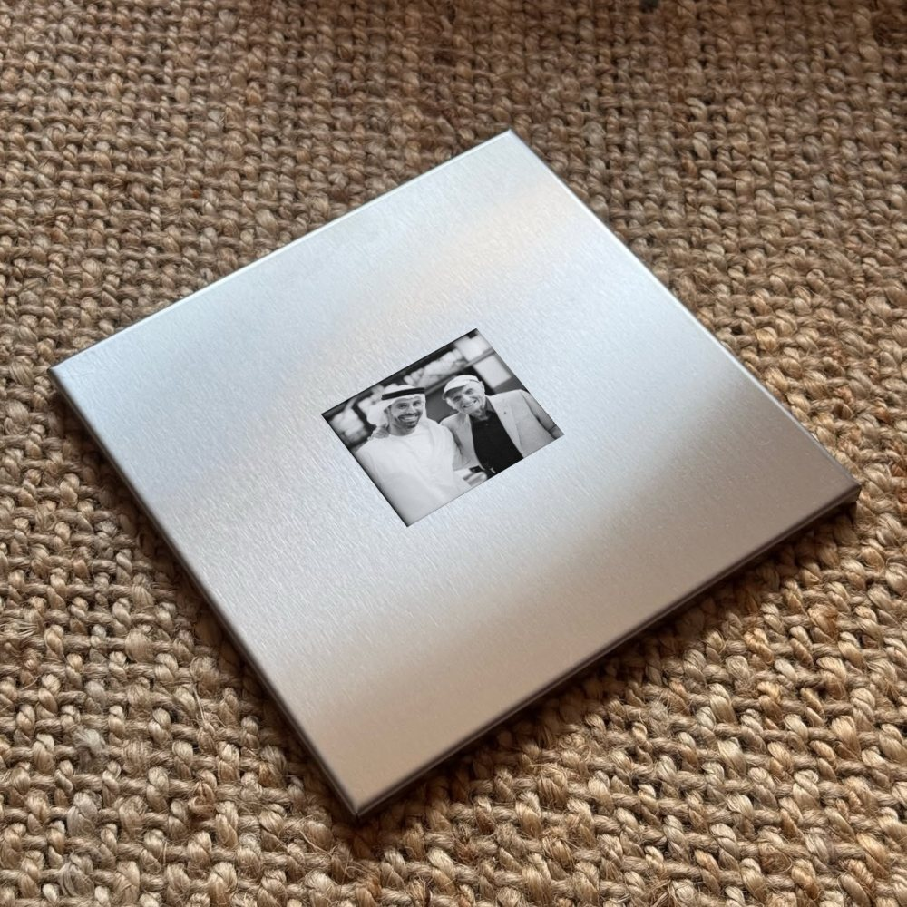
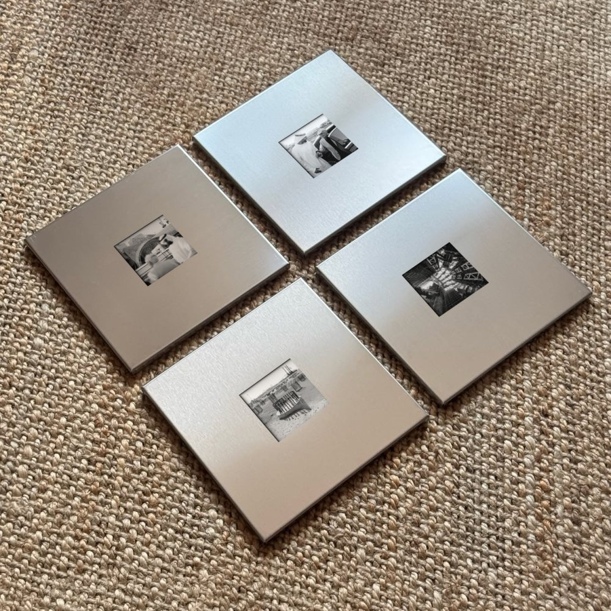
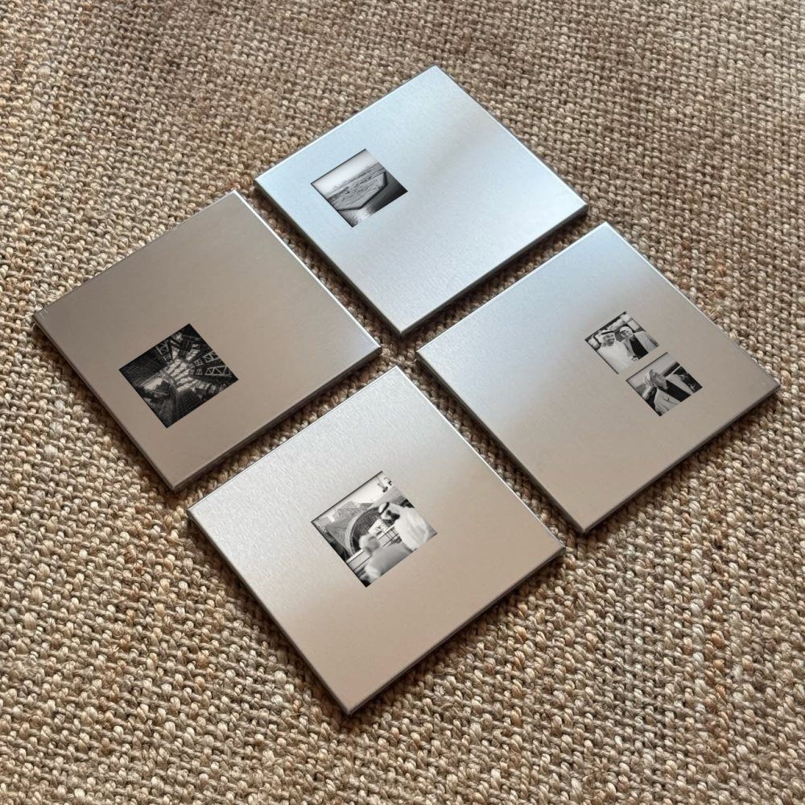
The edition
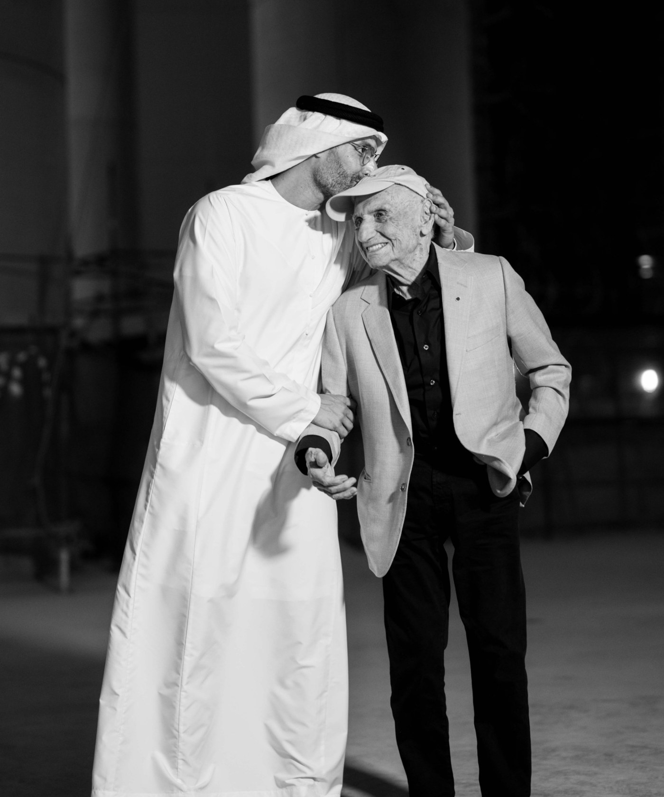
- Series10 steel frames, 420 × 420 × 40 mm
- Centrepiece1 portrait, 1300 × 1500 × 40 mm
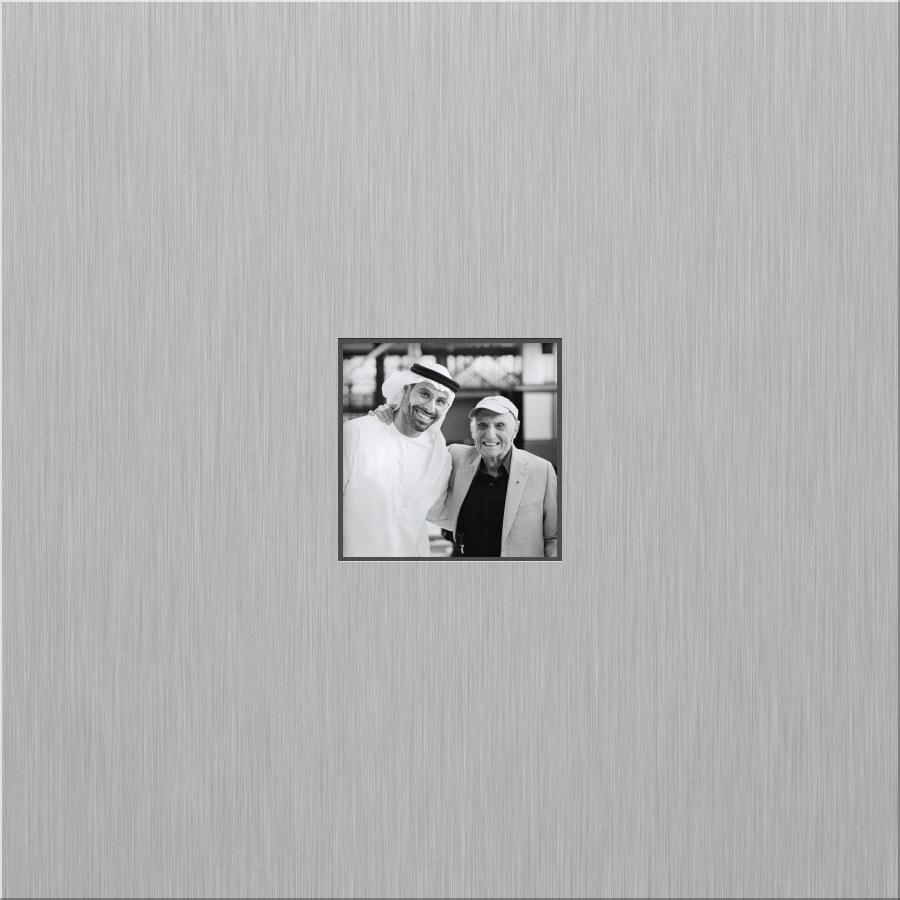
The piece
A solid field of brushed steel with one small window. The photograph is kept small on purpose, so the viewer steps in close.
- Frame420 × 420 mm
- MaterialStainless steel, brushed
- Print100 × 100 mm, centred
- GlazingGlass over the print
- Steel margin160 mm each side
- Depth40 mm
- Quantity10
Measurements · steel frame
Front elevation and side · all dimensions in mm
- Overall420 × 420 × 40 deep
- Sight window100 × 100
- Window positionCentred, 160 from every edge
- Print100 × 100, full bleed
- Build, front to backSteel face · glass · print · backing
- Depth40, steel sides
- FixingsD-rings and wire, see back
Print size equals the sight window. Add a few millimetres of bleed behind the steel so no white edge shows.
Measurements · portrait frame
Elevation · all dimensions in mm
- Overall1300 × 1500 × 40 deep, portrait
- Print1000 × 1200
- White border150 on all four sides
- FrameThin stainless steel profile
- Depth40
- GlazingGlass, full face
Print ratio 5:6. GAD5-25 is 4:5, so about 4% is trimmed from the top, dark background only; both figures stay whole. Overall size is measured to the outside of the border; add the steel profile width once the fabricator confirms it.
Depth · 40 mm
Every frame is a 40 mm deep steel box, so it stands off the wall with a clean steel edge on all four sides.
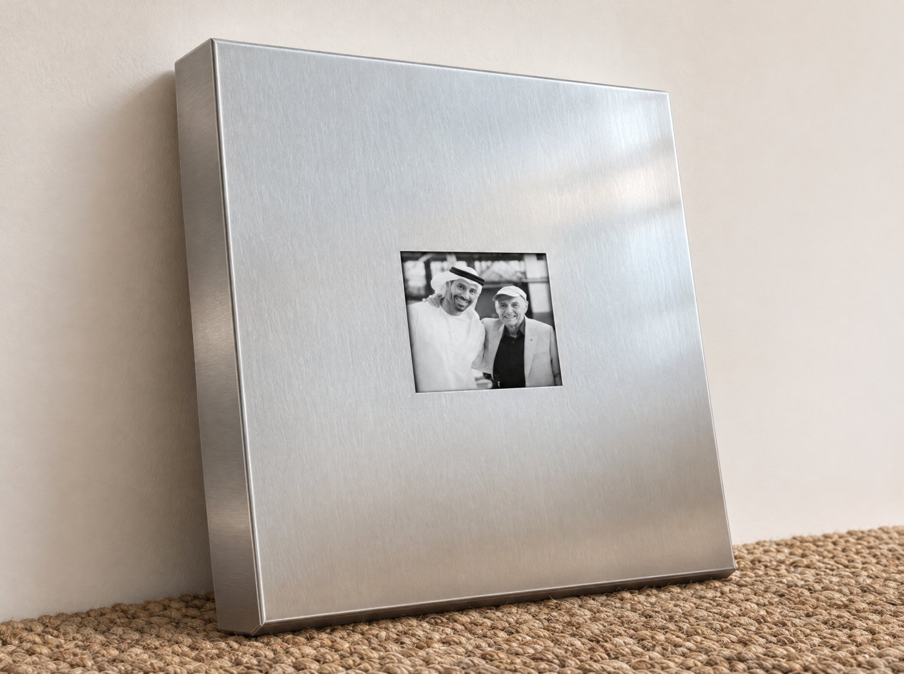
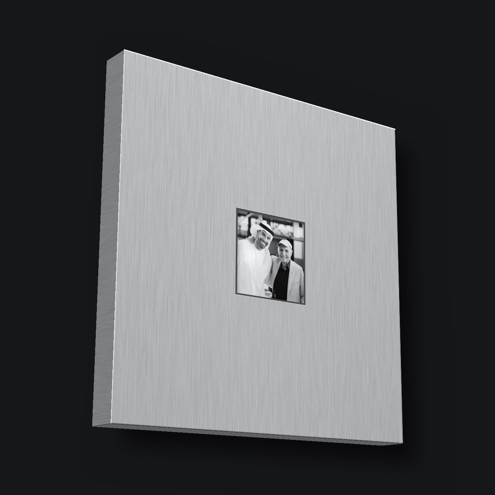
- Steel frames420 × 420 × 40 mm
- Portrait1300 × 1500 × 40 mm
- SidesBrushed steel, full depth
Left: drawn to exact proportion. Top: generated depth reference; window size follows the drawings.
Image options
Eighteen photographs for the ten steel frames, read as a sequence: the site, the people, the construction. The final ten are chosen from this sheet.
Wall layout · series
Suggested hang · all dimensions in mm
- Arrangement2 rows × 5
- Gap between frames100
- Overall2500 × 940
- Centre height1500 from floor
Frame positions 01 to 10; images are placed once the final ten are chosen. Gap and centre height can change on site.
In the room
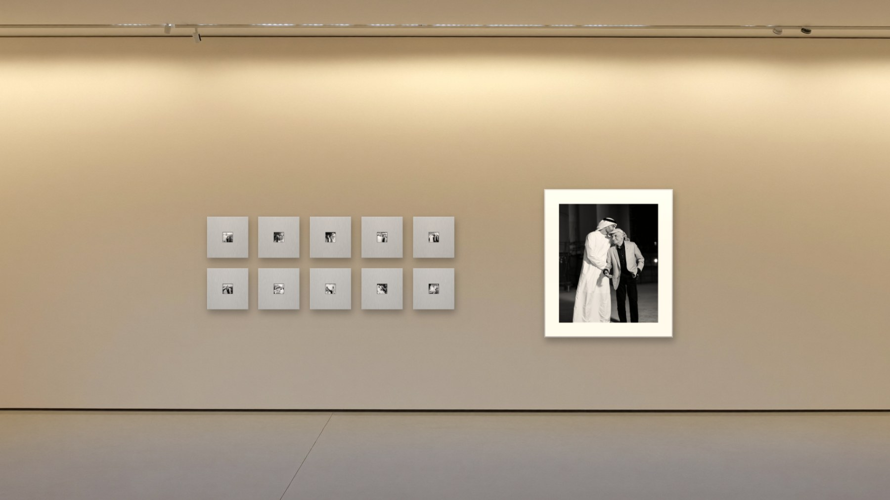
Visual mockup to scale: series 2500 × 940 mm, portrait 1300 × 1500 mm, 900 mm apart, both centred 1500 mm above the floor. Room generated for illustration.
The portrait
The closing image of the series, printed large. A thin steel line and a wide white border keep the attention on the gesture.
- Overall1300 × 1500 × 40 mm
- Print1000 × 1200 mm
- Border150 mm, even
- FileGAD5-25
The back
A standard frame back: steel rim, backing board, turn clips, D-rings with hanging wire and wall bumpers. The credit is debossed in the bottom left corner of every piece.
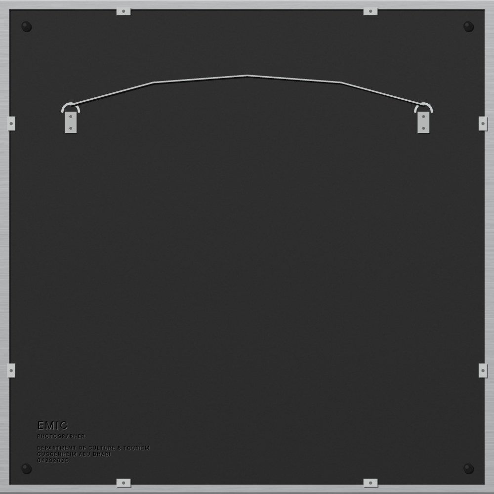
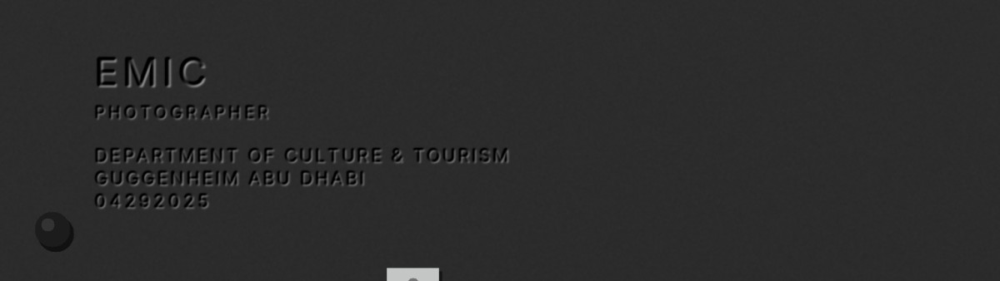
- CreditEMIC · Photographer
- ClientDepartment of Culture & Tourism
- LocationGuggenheim Abu Dhabi
- Date04292025
- DebossBottom left, 32 mm from left and bottom edges, blind
- Applies toAll 10 steel frames and the portrait
- Hardware8 turn clips · 2 D-rings · wire · 4 bumpers
emicworks.com